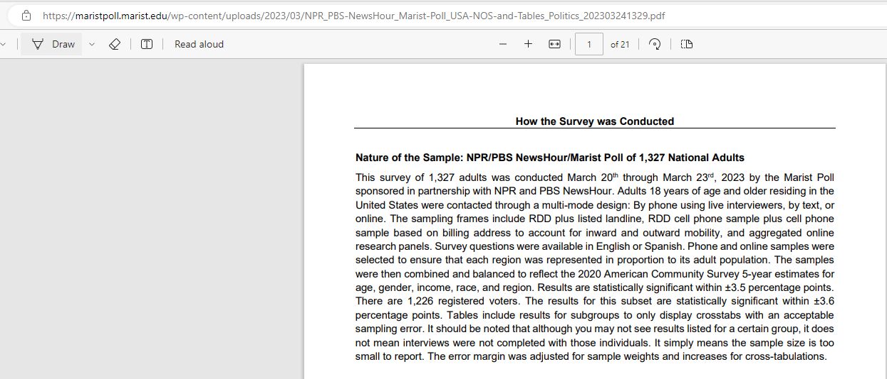
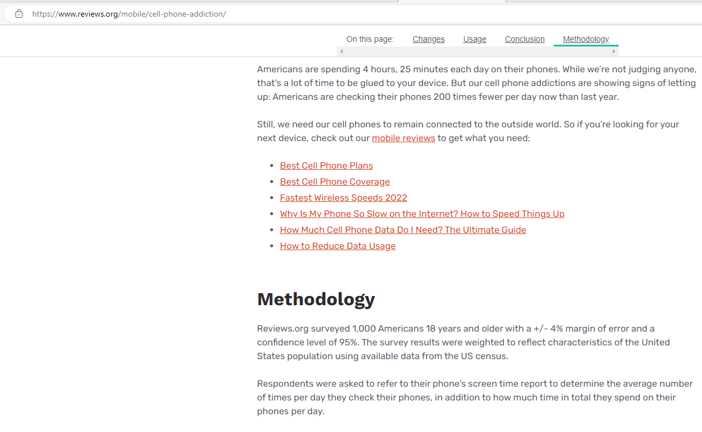
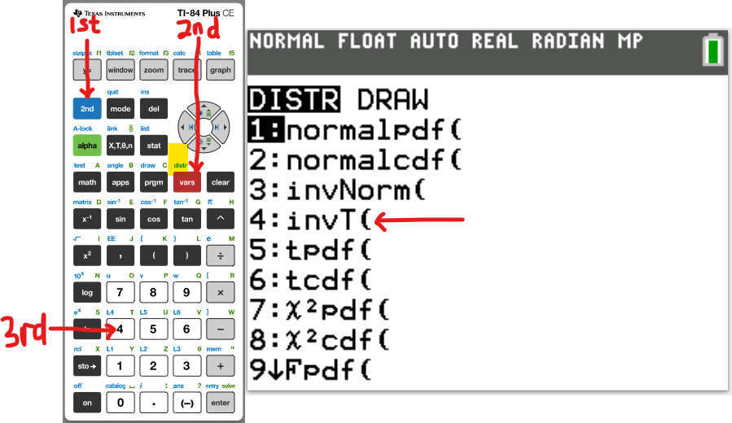

Inferential Statistics
I greet you this day,
First: Read the Stories (Yes, I tell stories too. ☺)
The stories will introduce you to the topic, while making you smile/laugh at the same time.
Second: Review the Notes.
Third: View the Videos.
Fourth: Solve the questions/solved examples.
Fifth: Check your solutions with my thoroughly-explained solved examples.
Sixth: Check your answers with the calculators.
I wrote some of the codes for the calculators using Javascript, a client-side scripting language. In
addition, I used the AJAX Javascript library. Please use the latest Internet browsers.
The calculators should work.
Comments, ideas, areas of improvement, questions, and constructive criticisms are welcome. Should you
need to contact me, please use the form at the bottom of the page. Thank you for visiting.
Samuel Chukwuemeka (Samdom For Peace)
B.Eng., A.A.T, M.Ed., M.S
Story on Population Proportion
Please check back later for the story.
Objectives
Students will:
(1.) Discuss Inferential Statistics.
(2.) Estimate population proportion.
(3.) Estimate population mean.
(4.) Estimate population variance.
(5.) Estimate population standard deviation.
(6.) Calculate inferential statistics using an appropriate statistical software package such as R
studio.
(7.) Draw statistical inferences from a large, realistic data set using a statistical software package
such as R studio.
(8.) Solve applied problems in inferential statistics.
Introduction
Do you have any favorite News Media? Or do you think any/some of them are fake news?
(Lol ...I did not mention any name so I do not get in trouble. 😊 But anyway, let's get back
on track. Please note: I am not endorsing any of them. I am only using them to teach you
topics in Statistics.)
Let us review some of the results of the surveys/polls conducted by these New Media. No worries, I shall
avoid controversial topics.
1st Example: Using Sample Proportion to Estimate Population Proportion
Proportion deals with Fraction which deals with Percentage.

Notice the result of the poll: Poll: Seven in 10 Americans say TikTok is a threat to national
security.
Keep in mind that 7 in 10 Americans means 70% of Americans.
But come on, do you think NPR/PBS NewsHour/Marist Poll surveyed all American adults?
If they did not survey all American adults, why would they say 7 in 10 Americans?
By the way, this is the data collection process:

So, would it not be better if they specified: 70% of 1327 = 0.7(1327) = 928.9 ≈ 929 adults...the 70% here is a statistic (numerical summary of a sample)
But they specified 70% of American adults ... the 70% here is a parameter (numerical summary of a population)
Noticed how NPR/PBS NewsHour/Marist Poll used the results of a sample to infer on a population?
Notice they included: the result of the poll, the sample size, and the margin of error.
But they did not specify an important measure. We shall find out that measure in the second example.
Let us review another example.
2nd Example: Using Sample Mean to Estimate Population Mean
Mean is the same as Average.
The sample mean is a useful estimator for the population mean because the sample mean is accurate and, with a sufficiently large sample size, very precise.
The spread of the distribution of the sample mean is much smaller than the spread of the population.
As the sample size increases, the spread of the sample mean decreases.
The accuracy of the sample mean in estimating the population mean is measured by the bias.
Bias is the mean distance between the sample statistic and the parameter it is estimating.
Let us discuss an example on how the sample mean is used to estimate the population mean.

The result of the survey states that: Americans are spending 4 hours, 25 minutes each day on their phones.
They only surveyed 1000 Americans.
They did not mention: average... but they should have mentioned it.
Why would they not write: 1000 Americans are spending an average of 4 hours, 25 minutes each day on their phones?
But, rather they used the results of a sample of Americans to make a generalization about the population of Americans.
Though they missed the wording: average in the conclusion, they did not omit an important measure: the confidence level
They included the result of the survey, the sample size, and the margin of error, and the confidence level.
Please note: This is a learning process, not an avenue to criticize reports.
Some of you may be journalists and may report polls/surveys. Please make sure you do not omit any necessary measure.
Welcome to Inferential Statistics.
In statistical inference, measurements are made on a sample and generalizations are made to a population.
It is often difficult to measure the population, hence we measure samples.
The results are then generalized to the population.
Definitions and Notes
It is also known as Statistical Inference.
This includes topics in: Probability, Probability Distributions, Sampling and Sampling Distributions, the Central Limit Theorem, Estimation of Population Parameters, and Hypothesis Testing among others.
A proportion can be expressed as a percent, decimal, or fraction.
We can estimate a population proportion using a:
(1.) Point Estimate
(2.) Confidence Interval also known as Interval Estimate
(3.) Sample Size
Point Estimate
A point estimate is the value of a statistic (from a sample) used to estimate the value of a population parameter.
It could be sample proportion, sample mean, and sample variance among others.
It is a single estimate of the population parameter.
The sample proportion is the best point estimate of the population proportion.
It is an unbiased estimator of the population proportion.
It is a single value. How do you see it? Any concern(s)?
How is it used?
A moral philosopher wanted to know the percentage of teenagers in the U.S that are virgins.
He knew it would be practically impossible to survey all the teenagers in the U.S.
So, he used a random sampling method and selected 5 schools in each of the 50 states in the U.S.
This implies $5 * 50 = 250$ schools
He visited those schools and randomly selected 20 students from each school.
This implies $20 * 250 = 5000$ students
He surveyed the students and the survey showed that only 7% of them are virgins.
He then estimates that 7% of U.S teenagers are virgins. Is he correct?
Keep in mind that he did not survey all U.S teenagers. Yet, he used Inferential Statistics to infer on that population from the result of the samples (the students he surveyed).
Confidence Interval (Interval Estimate)
A confidence interval is an interval of values of a statistic (from a sample) used to estimate a population parameter.
It is denoted by CI
The sample proportion is used to estimate the population proportion but not as a single value (as seen in Point Estimate).
Rather, it is used as an interval (Interval Estimate) with a level of confidence.
It is an interval of values. How do you see it? Any concern(s)?
Before we construct a confidence interval for estimating a population proportion, we need to make sure all the requirements are satisfied. What are the requirements?
Confidence Level (Level of Confidence or Degree of Confidence or Confidence Coefficient)
A confidence level is the probability that the confidence interval actually contains the population parameter if a large number of different samples are obtained.
It measures the success rate of the method of finding confidence intervals.
It is denoted by CL
The common confidence levels are: 90% (0.9), 95% (0.95), and 99% (0.99)
To create a confidence interval for a population proportion, add and subtract the margin of error to/from the sample proportion.
Significance Level (Level of Significance): 1st Definition
A significance level is the probability that the confidence interval does not contain the population parameter.
It is denoted by α
Based on our knowledge of Probability:
CL + α = 1
⇒ CL = 1 − α
The common significance levels are: 10% (0.1), 5% (0.05), and 1% (0.09)
Margin of Error (Maximum Error of Estimation or Error Bound)
The margin of error is the maximum likely difference between the point estimate and the actual value of the population parameter.
It tells how far the estimate is from the population value.
It is denoted by E
Critical Values
A critical value is a standard score used to separate sample statistics that are likely to occur from those that are not likely to occur.
NOTE: Usually, critical values are rounded to two decimal places.
If the number of decimal places is not specified, please use two decimal places.
However, if there is an equal distance between the probability for which you need to find the critical value (as demonstrated using the Interpolation Method), then round the critical value to three decimal places.
Does it make sense? This should only take place if the number of decimal places is not specified.
If the population standard deviation is given, use the z distribution (normal distribution table).
If the sample standard deviation is given, use the t distribution (t distribution table).
Properties of the z distribution
(1.) It is a bell-shaped curve.
(2.) The total area under the normal curve is 100%
or
The total probability under the normal curve is 1
or
The total relative frequency under the normal curve is 100% or 1
(3.) It is symmetric about the mean.
The mean is the center of the normal distribution.
Being symmetric about the mean implies that the area under the curve to the left of the mean is equal to the area under the curve to the right of the mean.
(4.) The mean, median, and mode of a normal curve is the same.
Because of this property, it has a single highest peak that occurs at the mean: $x = \mu$
In other words, the highest peak of the normal curve occurs where the value of the variable is equal to the mean of the distribution.
(5.) As the variable increases without bounds (gets larger and larger), or decreases without bounds (gets smaller and smaller); the normal curve approaches but never touches the horizontal axis.
(6.) The Empirical Rule:
(a.) About 68% of the curve lie within 1 standard deviation from the mean
In other words, about 68% of the curve lie between $\mu - 1\sigma$ and $\mu + 1\sigma$
(b.) About 95% of the curve lie within 2 standard deviations from the mean
In other words, about 95% of the curve lie between $\mu - 2\sigma$ and $\mu + 2\sigma$
(c.) About 99.7% of the curve lie within 3 standard deviations from the mean
In other words, about 99.7% of the curve lie between $\mu - 3\sigma$ and $\mu + 3\sigma$
(7.) The most widely used probability model for continuous numerical variables is the normal distribution.
(8.) The normal probability model is unimodal and symmetric, so if a dataset is suspected to be unimodal and symmetric, the normal probability model is a good model for such dataset.
(9.) The exact shape of the normal distribution is determined by the mean and the standard deviation.
(10.) The normal curve has inflection points at one standard deviation from the mean: between $\mu - 1\sigma$ and $\mu + 1\sigma$
This implies that the inflection points are found: one standard deviation below the mean and one standard deviation above the mean.
Properties of the t distribution
(1.) The t distribution is different for different sample sizes.
(2.) It has the same general symmetric bell shape as the z distribution but has more variability.
It has wider distributions as expected with small samples.
(3.) The mean of the t distribution is 0.
(4.) The standard deviation of the t distribution varies with the sample size, but it is greater than 1.
(5.) As the sample size gets larger, the t distribution gets closer to the z distribution.
Degrees of Freedom
The degrees of freedom of a sample data is defined as the number of sample values that are free to vary without violating any restrictions imposed on all the data values.
It is denoted by df
For example: say that we want the weights of 10 students to be restricted to 1600 pounds.
This means that we can freely assign weights to any 9 students (provided we meet the restriction).
But, we have to compute the weight of the 10th student (to still be within the restriction).
So, our degrees of freedom in this case would be (10 − 1 = 9) values.
Rare Event Rule for Inferential Statistics
If we assume that the probability of an event is less than 5%, then that assumption is probably not correct.
Notable Notes Regarding Inferential Statistics:
(Explain these using formulas and practical situations. Students should understand it, rather than memorize it. You may use mnemonics for some students.)
(1.) A statistical procedure is said to be robust if it works reasonable well even when one of its assumptions is violated.
(2.) The confidence interval methods for the mean are robust against departures from normality.
This means that the methods work well with distributions that aren’t normal, if departures from normality are not extreme.
(3.) As the sample size increases, the standard error decreases.
(4.) As the sample size decreases, the standard error increases.
(5.) As the sample size increases, the margin of error decreases.
This is because the difference between the statistic and the parameter decreases.
This is a consequence of the Law of Large Numbers.
(6.) As the confidence level increases, the margin of error increases.
This is because the larger the expected proportion of intervals that will contain the parameter, the larger the margin of error.
(7.) As the sample size increases, the margin of error decreases; and hence the accuracy increases.
(8.) As the sample size decreases, the margin of error increases; and hence the accuracy decreases.
(9.) As the sample size increases, the confidence interval is narrower.
(10.) As the sample size decreases, the confidence interval is wider.
(11.) As the standard deviation increases, the confidence interval is wider.
(12.) As the standard deviation decreases, the confidence interval is narrower.
(13.) As the level of confidence increases, the critical t value increase; thus, the margin of error increases, and the confidence interval is wider.
(14.) As the level of confidence decreases, the critical t value decreases; thus, the margin of error decreases, and the confidence interval is narrower.
(15.) Increasing the sample size while keeping the same confidence level decreases the margin of error; and hence increases the accuracy of estimating a population mean by a sample mean.
(16.) Decreasing the confidence level while keeping the same sample size decreases the margin of error; and hence increases the accuracy of estimating a population mean by a sample mean.
(17.) Before using either the z distribution or the t distribution, please make sure the population is normally distributed, or the sample size is greater than 30.
(18.)
Requirements for Constructing Confidence Interval used to Estimate Population Proportion
(1.) The sample must be a simple random sample.
(2.) The procedure has a fixed number of trials.
(3.) The trials are independent.
(4.) There are two categories of outcome for each trial: a success or a failure.
(5.) The procedure must have at least 5 successes and 5 failures.
In other words: np ≥ 5 and nq ≥ 5
Alternatively, we can write it as: npq ≥ 10
(6.) The probability of success in any one trial is the same as the probability of success in all trials.
Similarly, the probability of failure in any one trial is the same as the probability of failure in all trials.
Requirements for Constructing Confidence Interval used to Estimate Population Mean
(1.) The sample must be a simple random sample.
(2.) The population is normally distributed or the sample size is greater than 30.
(3.) The sample size must be less than 5% of the population size.
Alternatively, the population size must not be larger than 10 times the sample size.
Symbols
-
Symbols and Meanings
- CL = Confidence Level or Level of Confidence or Confidence Coefficient
- CI = Confidence Interval or Interval Estimate
- LCL = Lower confidence limit
- UCL = Upper confidence limit
- LCI = Length of confidence interval
- α = Level of Significance or Significance Level
- $z_{\dfrac{\alpha}{2}}$ = critical z value separating an area or probability of $\dfrac{\alpha}{2}$ in the right tail.
- $-z_{\dfrac{\alpha}{2}}$ = critical z value separating an area or probability of $\dfrac{\alpha}{2}$ in the left tail.
- $z_{\alpha}$ = critical z value separating an area or probability of α in the right tail.
- $-z_{\alpha}$ = critical z value separating an area or probability of α in the left tail.
- p̂ = sample proportion or estimated proportion of successes or point estimate of the population proportion
- q̂ = estimated proportion of failures
- p = population proportion
- SE = standard error
- SEest = estimated standard error
- x = number of individuals in the sample with the specified characteristic
- n = sample size or minimum sample size
- N = population size
- E = margin or error or maximum error of estimation or error bound
- $\bar{x}$ = sample mean or point estimate of the population mean
- μ = population mean
- s = sample standard deviation
- s² = sample variance
- σ = population standard deviation
- σ² = population variance
- $t_{\dfrac{\alpha}{2}}$ = critical t value separating an area or probability of $\dfrac{\alpha}{2}$ in the right tail (use for one-tailed tests)
- $t_{\alpha}$ = critical t value separating an area or probability of α in the right tail (use for two-tailed tests)
- df = degrees of freedom
- Χ² = Chi-Square distribution
- Χ²R = right-tailed (upper-tail) critical values of the Chi-Square distribution
- Χ²L = left-tailed (lower-tail) critical values of the Chi-Square distribution
- CI for Population Proportion in plus-minus notation = p̂ ± E
- CI for Population Proportion in interval notation = (p̂ − E, p̂ + E)
- CI for Population Proportion in trilinear inequality = p̂ − E < p < p̂ + E
- CI for Population Mean in plus-minus notation = x̄ ± E
- CI for Population Mean in interval notation = (x̄ − E, x̄ + E)
- CI for Population Mean in trilinear inequality = x̄ − E < p < x̄ + E
- min = minimum data value
- max = maximum data value
- R = range (we shall use it typically for the Range Rule of Thumb)
Formulas: Inferential Statistics: Population Proportion
Population Proportion
$ (1.)\;\; \alpha = 1 - CL ...in\;\;decimal \\[5ex] (2.)\:\: \hat{p} = \dfrac{x}{n} \\[5ex] (3.)\:\: \hat{p} + \hat{q} = 1 \\[5ex] (4.)\;\; \hat{p} = \dfrac{UCL + LCL}{2} \\[5ex] (5.)\;\; E = \dfrac{UCL - LCL}{2} \\[5ex] (6.)\:\: E = z_{\dfrac{\alpha}{2}} * \sqrt{\dfrac{\hat{p} * \hat{q}}{n}} \\[7ex] (7.)\;\; n = \dfrac{0.25 * \left(z_{\dfrac{\alpha}{2}}\right)^2}{E^2} \\[7ex] $
| Significance Level, α | Confidence Level, CL | critical z value separating an area or probability of $\dfrac{\alpha}{2}$ in the right tail, $z_{\dfrac{\alpha}{2}}$ |
|---|---|---|
| 1% (0.01) | 99% (0.99) | 2.575829306443923 ≈ 2.576 |
| 5% (0.05) | 95% (0.95) | 1.9599639861189817 ≈ 1.96 |
| 10% (0.1) | 90% (0.9) | 1.6448536251332162 ≈ 1.64 |
Formulas: Inferential Statistics: Population Mean
Population Mean
$ (1.)\;\; \alpha = 1 - CL ...in\;\;decimal \\[5ex] (2.)\;\; LCI = UCL - LCL \\[5ex] (3.)\:\: \bar{x} = \dfrac{\Sigma x}{n} \\[7ex] (4.)\:\: \bar{x} = \dfrac{UCL + LCL}{2} \\[7ex] (5.)\;\; E = \dfrac{UCL - LCL}{2} \\[7ex] (6.)\;\; LCI = 2E \\[5ex] (7.)\;\; SE = \dfrac{\sigma}{\sqrt{n}} \\[7ex] (8.)\:\: E = \dfrac{\sigma * z_{\dfrac{\alpha}{2}}}{\sqrt{n}} \\[10ex] (9.)\;\; E = \dfrac{s * t_{\dfrac{\alpha}{2}}}{\sqrt{n}} \\[10ex] (10.)\;\; n = \left(\dfrac{\sigma * z_{\dfrac{\alpha}{2}}}{E}\right)^2 \\[10ex] (11.)\;\; n = \left(\dfrac{s * t_{\dfrac{\alpha}{2}}}{E}\right)^2 \\[10ex] $
| Significance Level, α | Confidence Level, CL | critical z value separating an area or probability of $\dfrac{\alpha}{2}$ in the right tail, $z_{\dfrac{\alpha}{2}}$ |
|---|---|---|
| 1% (0.01) | 99% (0.99) | 2.575829306443923 ≈ 2.576 |
| 5% (0.05) | 95% (0.95) | 1.9599639861189817 ≈ 1.96 |
| 10% (0.1) | 90% (0.9) | 1.6448536251332162 ≈ 1.64 |
Normal Distribution Tables
Standard Normal Distribution Table (Left-Shaded Area)


Standard Normal Distribution Table (Center-Shaded Area)


t Distribution Table (First)
t Distribution Table (Second)
t Distribution Table (Third)
Texas Instruments (TI) Calculators
Critical t-value
By default, the area is to the left.
In other words, the result from the TI-calculator shown below gives the critical t-value such
that the area is in the left tail.
The value given by the calculator is a negative value by default.
Based on the diagrams in t Distribution Table (Third) table:
To determine the critical t-value if the:
(1.) Area is to the right, subtract the area in the left tail from 1 (because the total area under the
curve is 1)
Then, use the value.
(2.) Area is in both tails, use both the value (negative value) and the absolute value (positive value).

References
Chukwuemeka, Samuel Dominic (2023). Inferential Statistics.
Retrieved from https://mathematicscourses.github.io/Statistics/
Black, Ken. (2012). Business Statistics for Contemporary Decision Making (7th ed.).
New Jersey: Wiley
Gould, R., Wong, R., & Ryan, C. N. (2020). Introductory Statistics: Exploring the world through
data (3rd ed.). Pearson.
Kozak, Kathryn. (2015). Statistics Using Technology (2nd ed.).
Margin of Error and Level of Confidence. (n.d.). www.math.lsu.edu.
https://www.math.lsu.edu/~madden/M1100/week12goals.html
OpenStax, Introductory Statistics.OpenStax CNX. Sep 28, 2016.
Retrieved from https://cnx.org/contents/30189442-6998-4686-ac05-ed152b91b9de@18.12
Sullivan, M., & Barnett, R. (2013). Statistics: Informed decisions using data with an introduction to
mathematics of finance
(2nd custom ed.). Boston: Pearson Learning Solutions.
Triola, M. F. (2015). Elementary Statistics using the TI-83/84 Plus Calculator
(5th ed.). Boston: Pearson
Triola, M. F. (2022). Elementary Statistics. (14th ed.) Hoboken: Pearson.
Weiss, Neil A. (2015). Elementary Statistics (9th ed.). Boston: Pearson
CrackACT. (n.d.). Retrieved from http://www.crackact.com/act-downloads/
Critical Values of the Chi-Square Distribution:
https://itl.nist.gov/div898/handbook/eda/section3/eda3674.htm
CMAT Question Papers CMAT Previous Year Question Bank - Careerindia. (n.d.).
Https://Www.Careerindia.Com. Retrieved May 30, 2020, from
https://www.careerindia.com/entrance-exam/cmat-question-papers-e23.html
CSEC Math Tutor. (n.d). Retrieved from https://www.csecmathtutor.com/past-papers.html
Datasets - Data.gov. (2012). Data.Gov. https://catalog.data.gov/dataset
DLAP Website. (n.d.). Curriculum.gov.mt.
https://curriculum.gov.mt/en/Examination-Papers/Pages/list_secondary_papers.aspx
Fox News Poll: Support for Puerto Rican statehood increases in wake of Maria. (2017, October 26). Fox
News.
http://www.foxnews.com/politics/2017/10/26/fox-news-poll-support-for-puerto-rican-statehood-increases-in-wake-maria.html
Free Jamb Past Questions And Answer For All Subject 2020. (2020, January 31). Vastlearners.
https://www.vastlearners.com/free-jamb-past-questions/
Geogebra. (2019). Graphing Calculator - GeoGebra. Geogebra.org.
https://www.geogebra.org/graphing?lang=en
GCSE Exam Past Papers: Revision World. Retrieved April 6, 2020, from
https://revisionworld.com/gcse-revision/gcse-exam-past-papers
HSC exam papers | NSW Education Standards. (2019). Nsw.edu.au.
https://educationstandards.nsw.edu.au/wps/portal/nesa/11-12/resources/hsc-exam-papers
Inc, G. (2016, February 4). Americans’ Big Debt Burden Growing, Not Evenly Distributed. Gallup.com.
http://news.gallup.com/businessjournal/188984/americans-big-debt-burden-growing-not-evenly-distributed.aspx
JAMB Past Questions, WAEC, NECO, Post UTME Past Questions. (n.d.). Nigerian Scholars. Retrieved February
12, 2022, from https://nigerianscholars.com/past-questions/
KCSE Past Papers by Subject with Answers-Marking Schemes. (n.d.). ATIKA SCHOOL.
Retrieved June 16, 2022, from https://www.atikaschool.org/kcsepastpapersbysubject
Myschool e-Learning Centre - It's Time to Study! - Myschool. (n.d.). https://myschool.ng/classroom
Netrimedia. (2022, May 2). ICSE 10th Board Exam Previous Papers- Last 10 Years. Education Observer.
https://www.educationobserver.com/icse-class10-previous-papers/
Normal Distribution Table (Left Shaded Area):
https://www.math.arizona.edu/~rsims/ma464/standardnormaltable.pdf
Normal Distribution Table (Center Shaded Area):
https://itl.nist.gov/div898/handbook/eda/section3/eda3671.htm
NSC Examinations. (n.d.). www.education.gov.za.
https://www.education.gov.za/Curriculum/NationalSeniorCertificate(NSC)Examinations.aspx
School Curriculum and Standards Authority (SCSA): K-12. Past ATAR Course Examinations. Retrieved
December 10, 2021,
from https://senior-secondary.scsa.wa.edu.au/further-resources/past-atar-course-exams
Staff, P. E. (2017, August 28). Arizona Senate Poll: Kelli Ward Leads Jeff Flake By More than 25 Points.
People’s Pundit Daily.
https://www.peoplespunditdaily.com/polls/2017/08/28/arizona-senate-kelli-ward-leads-jeff-flake-25-points/
Statistial Tables: https://home.ubalt.edu/ntsbarsh/Business-stat/StatistialTables.pdf
Struyk, R. (2017, October 18). CNN poll: Most Americans oppose Trump’s tax reform plan | CNN Politics.
CNN. http://www.cnn.com/2017/10/18/politics/poll-trump-tax-reform/index.html
t Distribution Table: https://www.sjsu.edu/faculty/gerstman/StatPrimer/t-table.pdf
t Distribution Table: https://www.usu.edu/math/cfairbourn/Stat2300/t-table.pdf
51 Real SAT PDFs and List of 89 Real ACTs (Free) : McElroy Tutoring. (n.d.).
Mcelroytutoring.com. Retrieved December 12, 2022,
from
https://mcelroytutoring.com/lower.php?url=44-official-sat-pdfs-and-82-official-act-pdf-practice-tests-free